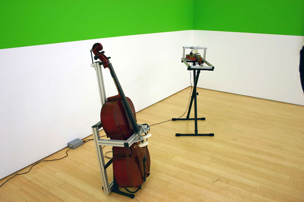

-
Anti-Prow and Prequel at Sarah Meltzer and AIG
by Stephen Squibb January 26, 2010
It bears repeating: the belief that housing prices would continue rising forever is as utopian an idea as has ever informed human endeavor. What’s more, all our cynical pragmatism about previous utopias was useless against this most recent and widespread naïveté. Perhaps it was something in the nature of housing itself; the understanding of collective need slowly giving way to an image of the vast sea of humanity furiously pressing against a limited supply, forcing prices ever upward. Squint and it almost makes sense. Of course history is littered with these market utopias, which are even more prevalent than their political cousins. Read Marx in public, however, and you are likely to elicit sympathetic head shakes and a gentle but definitive condescension. The operative assumption being that, unlike the reader of The Art of The Deal, the would-be revolutionary actually believes in the good of humanity. The market fundamentalist, by contrast, is just looking to get rich, a outcome common enough in these parts. The obvious irony is that a great many individuals got very rich indeed off of Communism, but then, no one assumes you’re an aspiring member of the politburo. The extent to which we are willing to accept utopian pretensions turns not on their relative credulity, but on the fate of the faithful. We believed in ever-rising housing prices for the same reason that our ancestors believed in the dictatorship of the proletariat, because it was what successful people appeared to do.
Two installations by artists Peter Rostovsky and Olav Westphalen, PROW: The Prequel and Anti-Prow currently open at Sara Meltzer and Art In General, respectively, offer two competing engagements with these operative utopias, each attuned to their presenting spaces. PROW: The Prequel makes a claim for the essentially commercial nature of artistic production, modeling itself on an independent movie studio and displaying drawings derived from Google’s open source 3d warehouse. Anti-PROW, responding to its non-profit location, covers the walls with texts from manifestos, artistic and otherwise, while also featuring hand drawn images of dead Lenin, dead Che, dead Mao, and Jonestown, among others.
Both shows feature a large centerpiece. PROW offers a complex creation utilizing fans, theatrical lighting, and sheets of fabric to simulate a massive fire in the center of the room. Two automated string instruments herald its intermittent eruption. Starting up every six minutes or so, and carrying on for about two, the blaze is at once quite striking and obviously artificial. Anti-PROW, for its part, has a number of ladders, open and strapped to one another; the structure having been arranged and painted to reflect the size, shape and color of the fake fire located across town.
Each exhibition aims at sketching the presuppositions underlying their individual homes. In PROW’s case, the independent movie studio model is offered up as the highest, most respectable form of commercial art. The open source drawings, channeling the traditional world-as-model aspiration of architecture as well as contemporary wiki-idealism, are so many gravestones for the utopian promise of the marketplace. Similarly, Anti-Prow’s declared negation of the other, commercial PROW presents the not-for-profit space as a counter-offer, the only true space for art. Its drawings of dead believers similarly mark the end point for a certain anti-commercial strain of thinking.
Especially valuable here is the strong positioning given to not-for-profit spaces in the mapping of contemporary production. Long considered a sort of appendix to the more essential organs of museum and gallery, Anti-PROW offers up the 501©3 model as heir to a very specific vanguard tradition. Though perhaps darkly humorous to anyone familiar with the deep indignities carried by that particular tax-status, it’s not a point that can be quickly dismissed. With the standing of the contemporary museum radically compromised there is a vacancy to be filled. It remains to be seen, clearly, to what extent not-for-profits can effectively take up this mantle, but it is certainly an important moment for them, and one that Anti-PROW highlights by engaging so openly with it.
This is not to say that I see a clear or material echo between vanguardist movements and non-for-profit production. The two are perhaps better situated on opposite ends of the spectrum, as bookends for the great godbeast capital, one it’s (declared) enemy and the other it’s obedient pet. They have, though, potentially been forced into the same corner, or at least it’s a question worth begging. Interestingly, PROW offers a somewhat more nuanced engagement with commercial space, and the presentation of the indie-movie model as more collective and variegated seems a more hopeful suggestion than it might at first appear. It does not seem, ultimately, that PROW is as hard on the commercial enterprise as it’s counterpart is on the not-for-profit. The former is generally held to be still in the moment of its becoming, while the latter is relegated to a violent and archaic past.
Still, there is the question of the centerpieces. I think their chief virtue, and its not a minor one, is to linger precisely as questions. The formal and visual congruence between the two is certainly the most classically arty-crafty, pretty-pretty achievement to be found in either exhibition, especially if you see the Art in General show first. In this case, the moment of conflagration is one of lovely recognition, like fireworks bursting into the shape of a star. There are other patterns here too, of course, the blue-collar overtones of the ladders contra the constructed, superficial spectacle of a fake fire. But the strongest reading is one that takes the apparent similarity seriously, as a sneaky gesture towards art’s final complicity being chiefly, if not exclusively, with itself. It does not matter so much, the PROWs whisper, whether one is making money or not; the creative effort, in its reaching and striving, is always, always more than the sum of its parts.

{kind=link}
{kind=link}
{kind=link}
{kind=link}